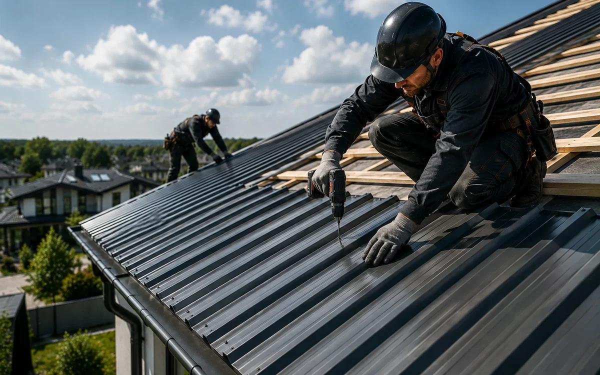

Спочатку оцінюють стан конструкції, а вже потім обирають матеріал. Однакова ознака на двох об’єктах може мати різне походження.
Різниця у профілі
Металочерепиця імітує ряди черепиці, профнастил має поздовжні ребра. Це впливає на схему укладання, підрізання і сприйняття фасаду.
Для приватного будинку
На житлових будинках частіше обирають металочерепицю через форму профілю. Профнастил теж застосовується, якщо це відповідає архітектурі та конструкції.
- призначення будівлі
- крок обрешітки або прогонів
- довжину скатів
- кількість підрізань
- тип захисного покриття
Для господарських і комерційних об’єктів
Профнастил зручний на великих простих площинах, але його несуча здатність залежить від висоти профілю і товщини металу.
Помилки, яких варто уникати
- порівняння лише за назвою профілю
- використання надто тонкого листа
- ігнорування вентиляції
- неправильні нахлести
Герметик або латка не замінюють діагностику. Спочатку визначають межі дефекту, потім обирають спосіб втручання.
Що спільного
Обидва матеріали потребують правильної обрешітки, вентиляції, герметичних примикань і захисту місць різання.
Поширені запитання
Що краще для складного даху?
На складній геометрії важливі розміри листів, кількість відходів і можливість акуратно виконати вузли. Рішення приймають за кресленням або після замірів.
Чи однаково вони служать?
Строк залежить від товщини металу, захисного шару, монтажу та умов експлуатації, а не лише від виду профілю.